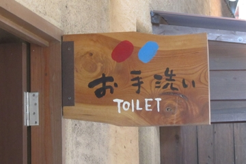

ドレスアップしたら
紳士、淑女らしく
振る舞いましょう。
スカートと重ならないようにすると
手が短くなる。
逆三角のシャープなスタイル。
男女の並び順に、決まりはないようだ。
男性は、肩幅程度に足を開く。
サイクルオアシスにて。
ヘルメットを被っている。
小、大、和式、洋式、
オストメイトなどを
記号で識別させる。
３Ｄ化。
テアトロシェルネにて。
デッサン・モデルさんですか？

せとうち茶屋大三島にて。
ほぼ限界まで抽象化。
映画「マトリックス」の
青い薬と赤い薬の
選択シーンを過去の記憶から引き出す。
スライムとスライムベスにも見えるが。
もっと上の世代だと
メルモちゃんのキャンディーか。
非常口のサインや、若葉マークなどは
きっちりと標準規格が決められている。
それに対して、トイレのサインは
個々にカスタマイズできる。
その事が日本のトイレ文化を
より高いステージへとドライブさせる
トリガーの一つになっている、
のであーる。